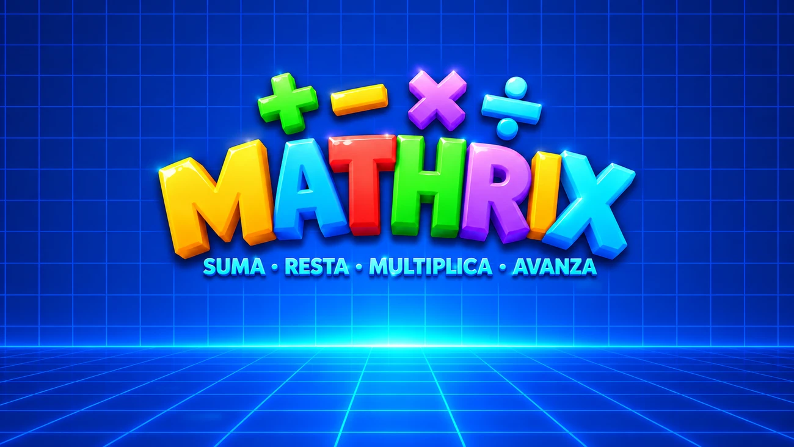

¡Bienvenidos a Mathrix!
Hola papás: observen las figuras y resuelvan los retos matemáticos para superar los cinco niveles.
Creado por: ISABELA, AMY, MARCELO Y LUZ
Instrucciones
- Observa la figura o lee la operación de la tarjeta superior.
- Tienes 30 segundos por pregunta para seleccionar la tarjeta con la respuesta correcta.
- Comienzas cada nivel con 3 vidas. Un error o tiempo agotado resta una vida.
- Cada acierto suma 10 puntos y lanza confeti. Los puntos se acumulan entre niveles.
- Presiona Siguiente para avanzar. Si pierdes las 3 vidas, termina la partida.
❤️ Vidas: 3
⭐ Puntos: 0
RETO ACTUAL
Elige la tarjeta con la respuesta correcta:
GAME OVER
⭐ Puntos0
✅ Aciertos0
🧩 Preguntas0